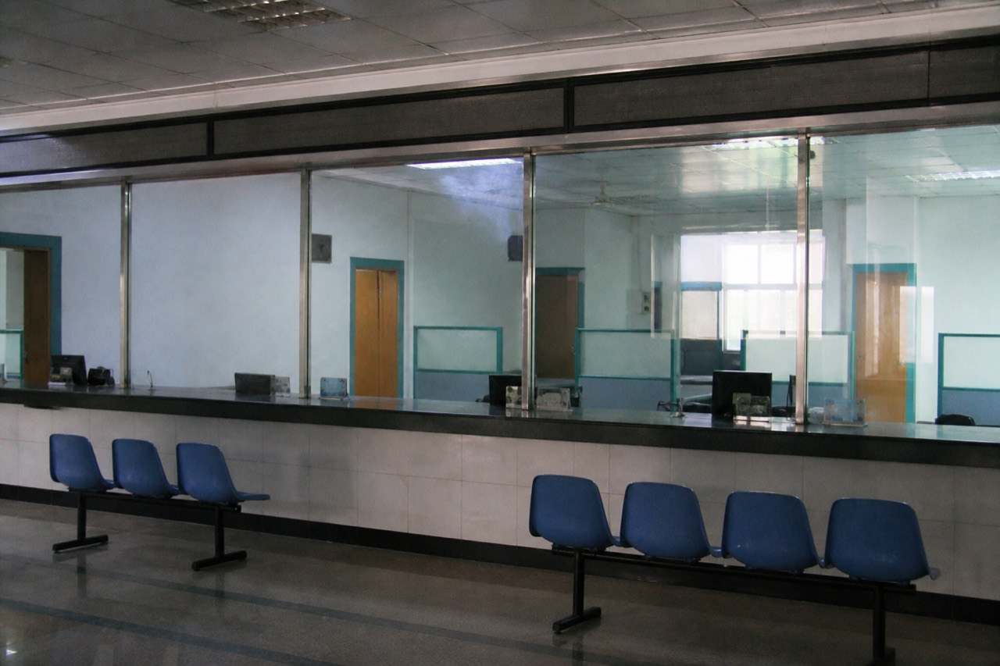

This is a counter. You need to log in to post. Old threads are still here.

| Title | Updated |
|---|---|
| Handle RideAlong asked once (hasn't been back) | 2014-07-09 |
| ZhangXiu: is 12 QiaotouLane still coming | 2018-11-02 |
| Someone asked if the webmaster's still around | 2016-03-20 |
Titles sit in the table. You can't open them. People's names and handles are still in the rows.
Qiaotou Desk counter unattended